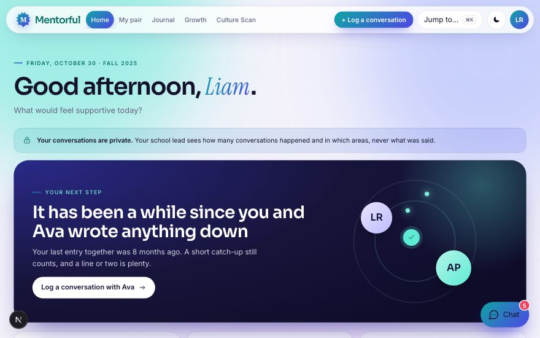

For teachers
Teacher dashboard
- Home with one clear next step
- My pair: your partner, and a lookbook of colleagues by name, department and strengths
- Journal with exact timestamps, and notes to your future self
- Growth: goals, a practice log, and a private count of your 100 hours of professional development (CTLE)
- Pair chat with file sharing, and the Culture Scan